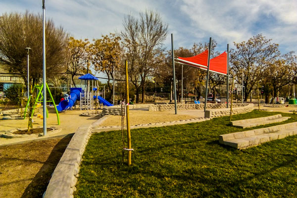
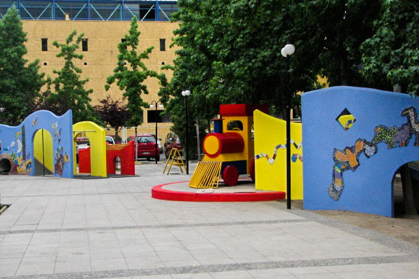
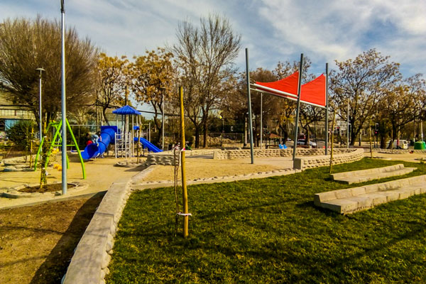
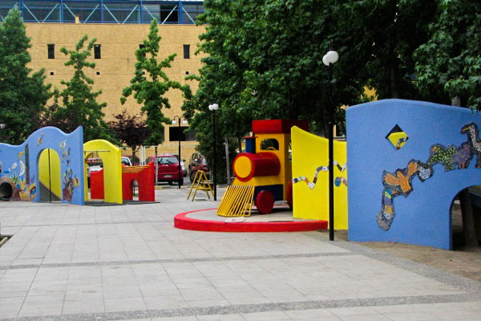

Más que solo arquitectura y
Paisajismo
Acercamos la NATURALEZA a la vida cotidiana de la CIUDAD, los BARRIOS, las FAMILIAS para que cada PERSONA que recorre nuestros paisajes tenga una EXPERIENCIA que nos acerque a NUESTRO PAISAJE
Saber MásAcercamos la NATURALEZA a la vida cotidiana de la CIUDAD, los BARRIOS, las FAMILIAS para que cada PERSONA que recorre nuestros paisajes tenga una EXPERIENCIA que nos acerque a NUESTRO PAISAJE
Saber Más 



Revisa todos nuestros proyectos
Ver Proyectos
Magdalena Barros McIntosh
Directora Abrespacio
Jimena Álvarez
Arquitecta
Claudio De La Cerda
Ingeniero Agrónomo

Valeria Rodriguez Pérez
Ing. Agrónomo, Paisajista y Huertera Urbana
Francisca Oteíza Fierro
Arquitecta del paisaje
Contacto
Email: contacto@abrespacio.cl
Fono: +56 (2) 2227 4682